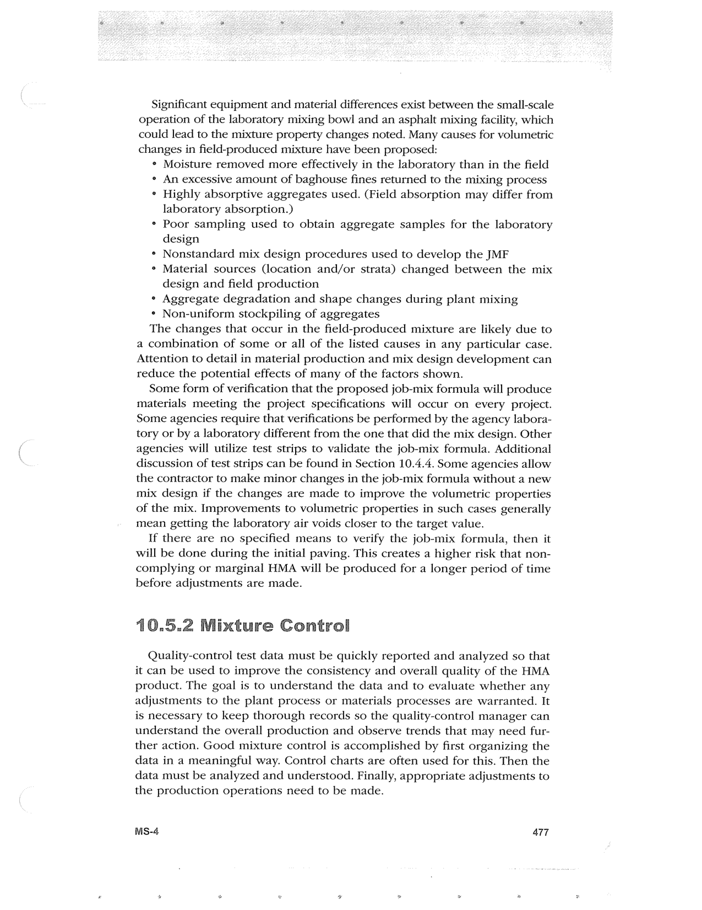

PDF page 511 · book page sequence 477


Searchable transcription
Unproofread OCR · 453 detected words; mean OCR confidence 95.35. Check technical values, symbols and table columns against the scan.
Significant equipment and material differences exist between the small-scale operation of the laboratory mixing bowl and an asphalt mixing facility, which could lead to the mixture property changes noted. Many causes for volumetric changes in field-produced mixture have been proposed:
¢ Moisture removed more effectively in the laboratory than in the field
° An excessive amount of baghouse fines returned to the mixing process
° Highly absorptive aggregates used. (Field absorption may differ from
laboratory absorption.)
* Poor sampling used to obtain aggregate samples for the laboratory
design
* Nonstandard mix design procedures used to develop the JMF
° Material sources (location and/or strata) changed between the mix
design and field production
° Aggregate degradation and shape changes during plant mixing
* Non-uniform stockpiling of aggregates
The changes that occur in the field-produced mixture are likely due to a combination of some or all of the listed causes in any particular case. Attention to detail in material production and mix design development can reduce the potential effects of many of the factors shown.
Some form of verification that the proposed job-mix formula will produce materials meeting the project specifications will occur on every project. Some agencies require that verifications be performed by the agency labora- tory or by a laboratory different from the one that did the mix design. Other agencies will utilize test strips to validate the job-mix formula. Additional discussion of test strips can be found in Section 10.4.4. Some agencies allow the contractor to make minor changes in the job-mix formula without a new mix design if the changes are made to improve the volumetric properties of the mix. Improvements to volumetric properties in such cases generally mean getting the laboratory air voids closer to the target value.
If there are no specified means to verify the job-mix formula, then it will be done during the initial paving. This creates a higher risk that non- complying or marginal HMA will be produced for a longer period of time before adjustments are made.
10.5.2 Mixture Control
Quality-control test data must be quickly reported and analyzed so that it can be used to improve the consistency and overall quality of the HMA product. The goal is to understand the data and to evaluate whether any adjustments to the plant process or materials processes are warranted. It is necessary to keep thorough records so the quality-control manager can understand the overall production and observe trends that may need fur- ther action. Good mixture control is accomplished by first organizing the data in a meaningful way. Control charts are often used for this. Then the data must be analyzed and understood. Finally, appropriate adjustments to the production operations need to be made.
MS-4 477